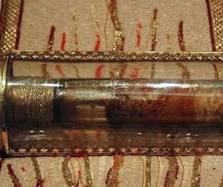

The "Eucharistic Miracle" of Bruges actually refers to the Relic of the Holy Blood housed in the Basilica of the Holy Blood. According to tradition tied to the 1203/1204 sack of Constantinople, it is a venerated rock-crystal vial containing fabric stained with the physical blood of Jesus Christ.
Origin: The earliest verifiable records place the arrival of the relic in Bruges around the mid-13th century. It was likely brought over by Count Baldwin IX of Flanders after he conquered Constantinople during the Fourth Crusade in 1204.
The Miracle: Historical documents from the 14th century record a purported Eucharistic miracle where the dried blood inside the vial would miraculously liquefy every Friday at noon, though this phenomenon is widely considered an act of medieval devotion.
Location: The relic is kept in the Upper Chapel of the Basilica of the Holy Blood, located at Burg Square, 8000 Bruges, Belgium.
Viewing: The vial is displayed for public veneration daily, with specific timings usually scheduled between 2:00 PM and 4:00 PM.
Annual Event: The relic is the centerpiece of the UNESCO-recognized Procession of the Holy Blood, celebrated annually on Ascension Day.